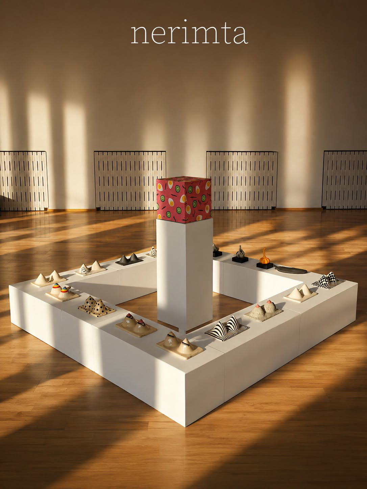

Parodos ir meno mugės
Kūrybos susitikimai su žiūrovais Lietuvoje ir užsienyje.
Atrinkti įvykiai. Parodų fotografijos dar ruošiamos; jų nepakeičiame atsitiktiniais vaizdais.

„Nerimta“
Keramikos paroda · KILOWAC IX
Paroda Šiaulių Didždvario gimnazijoje. Ironija ir autoironija tampa būdu kalbėti apie žmogaus susireikšminimą, trapumą ir kasdienybės absurdą.
Šaltinis: KILOWAC


„Kita nerimo pusė“
ArtVilnius’26
Keramikos kūrinių pristatymas, kuriame nerimas ir jo ženklai atsiskleidžia per kasdienius veiksmus bei įpročius.
Šaltinis: Interviu apie projektą
„Esi tuo, ką valgai“
ArtVilnius’25 · Giedra galerija
Keramikos darbai, kuriuose maisto motyvai įgyja naujus pavidalus ir prasmes.
Šaltinis: ArtVilnius’25 katalogas
Parodų istorija
Nomeda Marčėnaitė yra surengusi daugiau kaip penkiasdešimt personalinių parodų. Šis skyrius pildomas patikrintomis datomis, vietomis ir kūrinių dokumentacija.
Pakviesti į parodą